文字
背景
行間


カテゴリ:学校環境
桜のある風景4（令和２年）
３月24日（火）今日は寒の戻りで非常に寒い朝になりましたが、天候は晴で澄んだ青空が広がっています。やはり桜の花は青空を背景にすると一段と映えますね。
今日の写真は、正門付近から地域交流棟回りと西門近辺から学思館脇のテニスコート周辺の桜の状況をお伝えします。


 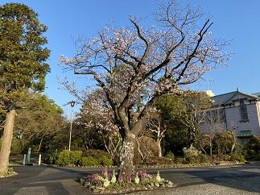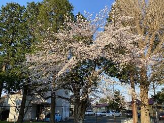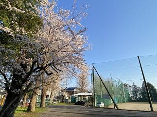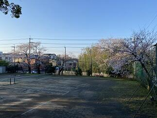
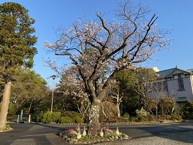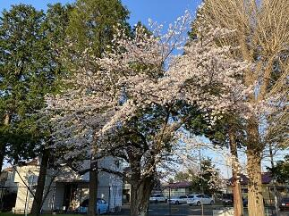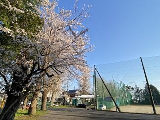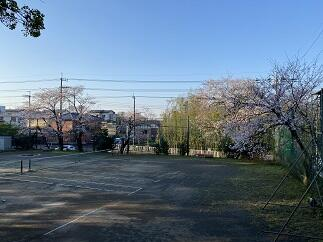
今日の写真は、正門付近から地域交流棟回りと西門近辺から学思館脇のテニスコート周辺の桜の状況をお伝えします。
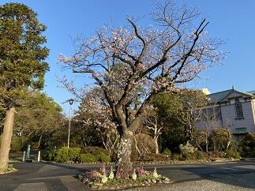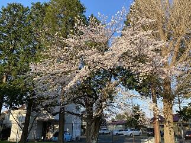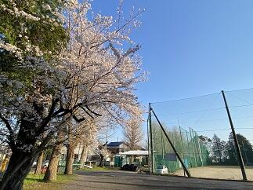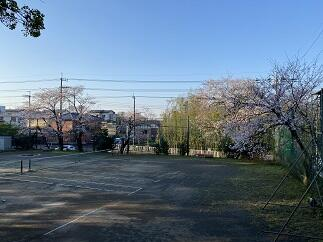 桜のある風景3（令和2年）
3月23日（月）の朝は、あいにくと曇り空で時折、小雨がぱらついています。昨日は、東京など一部の場所では夏日を記録したようですが、春分の日からの3連休中の暖かさで、佐倉高校の桜も一気に開花しました。咲いている場所や桜の種類によって多少違いはあるものの見事に濃淡様々なさくら色の花を誇らしげに咲かせています。


 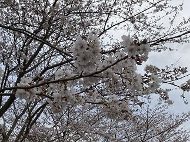
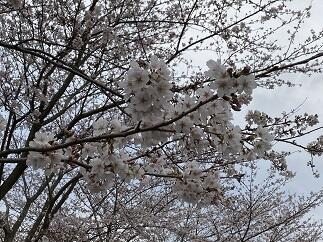
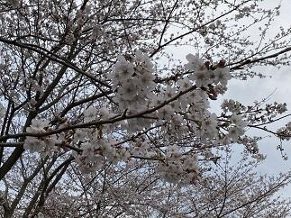 桜のある風景2（令和2年）
一気に暖かな春の兆しが見え始めました。校内のソメイヨシノなどの桜の蕾が開花直前となってきました。遠目には木々の枝が赤く色付いているように見えます。
写真は、正門を入ってすぐに目に入る桜の木と駐輪場脇の桜の外観と蕾の様子です。
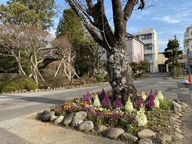


写真は、正門を入ってすぐに目に入る桜の木と駐輪場脇の桜の外観と蕾の様子です。
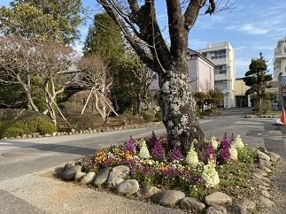
桜のある風景1（令和2年）
駐輪場とテニスコートの法面を隔てるフェンスに沿って植えてあるソメイヨシノの桜の蕾がかなり膨らんできました。今週から来週にかけて開花するものと思われます。また、記念館脇にあるシナミザクラはとても綺麗に咲いています。
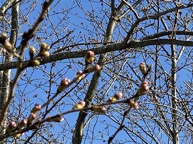
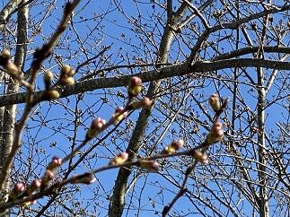
台風の爪痕からの復旧
昨年の台風15号、19号や大雨による被害から半年が経とうとしていますが、未だ復旧できていないところも多いと思います。本校も、まだ多くの爪痕が残っていますが、年度末までに復旧に向けて整備を進めているところです。今日は、記念館の中央の最上部にある大塔の屋根の修理の為の足場が組まれました。また、第2グランドの防球ネットで外れていた部分を元に戻しました。更に、駐輪場とテニスコートの法面を分けるフェンスも土台から作り直していただいて新品のフェンスになりました。新年度には、きれいに整備された学校に戻ってこれると思います。
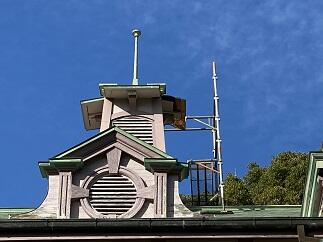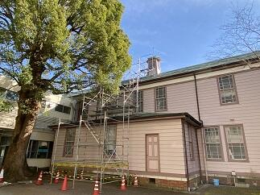 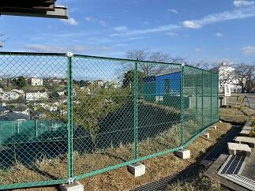
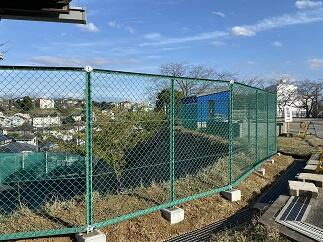
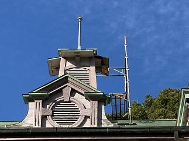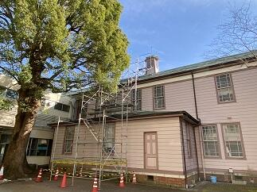
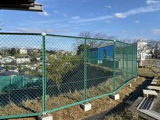 佐倉の桜その３～その１
(その３) 2月25日から国公立の第2次試験が多くの大学で行われています。佐倉高校では千葉県公立高等学校後期入学者選抜の願書受付日です。無事に試験や検査が行われることを願います。
学思館横の河津桜は7分咲きで道路からも鑑賞できるほど程良く咲いていてとても綺麗です。（写真）
→（その２）2月19日、(その１) ２月17日の状況は写真下の ＞＞続きを読む をクリック
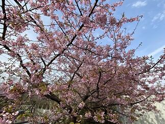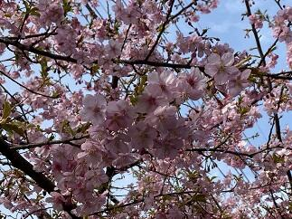
学思館横の河津桜は7分咲きで道路からも鑑賞できるほど程良く咲いていてとても綺麗です。（写真）
→（その２）2月19日、(その１) ２月17日の状況は写真下の ＞＞続きを読む をクリック
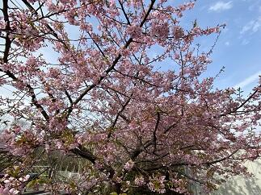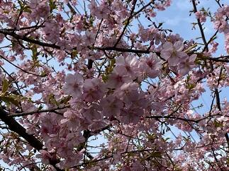
(その２) ２月19日は公立高校の前期選抜の結果発表日でした。天候に恵まれ穏やかで、日差しが暖かい日でした。
学思館横の河津桜は三分咲きといったところです。


(その１) ２月17日は学思館の横の河津桜が咲き始めたのでお知らせします。多くの蕾が濃いピンクに色づき膨らんでいます。このところの暖かい気候に促されて咲く準備が一気に整って来たようです。受験生の皆さんにも良い知らせが届くことを期待しています。
 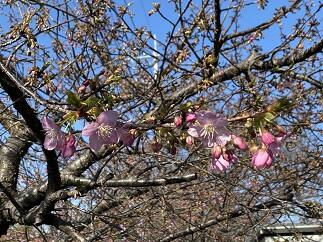
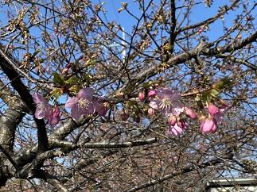
学思館横の河津桜は三分咲きといったところです。
(その１) ２月17日は学思館の横の河津桜が咲き始めたのでお知らせします。多くの蕾が濃いピンクに色づき膨らんでいます。このところの暖かい気候に促されて咲く準備が一気に整って来たようです。受験生の皆さんにも良い知らせが届くことを期待しています。
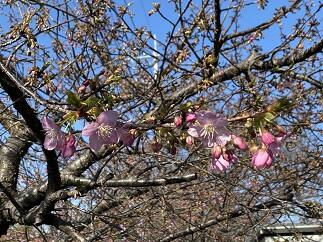 紅葉の季節２
朝晩の冷え込みがかなりきつくなってきました。風邪やインフルエンザに係りやすい時期ですから、手洗いの励行と身体を冷やさないようにして体調管理に気をつけましょう。記念館や東郷池の周りの木々も色とりどりの葉をつけてとても美しい景色を演出してくれています。


さて、今週は先生方が互いに授業を見合い、より良い授業実践を目指して研究実践に取り組む授業練磨の週間です。この時期に多くの研究授業も行われています。昨日行われた授業公開については、保護者や近隣の先生方多くに方々に参観いただきありがとうございました。
→11月27日の様子は続きを読むをクリック
さて、今週は先生方が互いに授業を見合い、より良い授業実践を目指して研究実践に取り組む授業練磨の週間です。この時期に多くの研究授業も行われています。昨日行われた授業公開については、保護者や近隣の先生方多くに方々に参観いただきありがとうございました。
→11月27日の様子は続きを読むをクリック
このところ気温は低く雨ばかりです。体調を崩す人も増えてきていまので気をつけていきましょう。今日の紅葉の様子です。（11月27日）


紅葉の季節
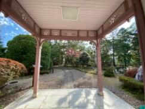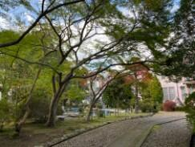 11月9日（土）に120周年記念式典を無事挙行できましたことに対して、皆様に厚く御礼申し上げます。今日は、その式辞のなかで紹介させていただいた東郷池周りの木々の葉が色づき始めた様子をお見せしたいと思います。
11月9日（土）に120周年記念式典を無事挙行できましたことに対して、皆様に厚く御礼申し上げます。今日は、その式辞のなかで紹介させていただいた東郷池周りの木々の葉が色づき始めた様子をお見せしたいと思います。
11月9日（土）に120周年記念式典を無事挙行できましたことに対して、皆様に厚く御礼申し上げます。今日は、その式辞のなかで紹介させていただいた東郷池周りの木々の葉が色づき始めた様子をお見せしたいと思います。 東郷池復旧状況No.3
県内各地では、まだ台風15号、19号による被害からの回復が、ままならない状況にも関わらず先週金曜日（10月25日）の記録的豪雨によりまた、多くの被害を受けることとなりました。被害に遭われたすべての皆様へお見舞いを申し上げますとともに、一日も早い復旧と落ち着いた日常に戻れますことを祈念いたします。
台風15号で東郷池に直接倒れた檜を含む池周辺の倒木4本を本日（10月28日）やっと、業者の方に撤去していただくことができましたのでお知らせします。（写真 上段から下段左まで撤去の様子 下段中央、右は倒木撤去後の東郷池）
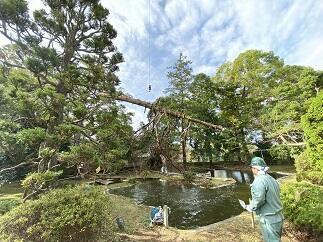 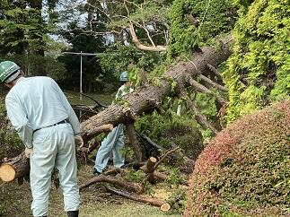
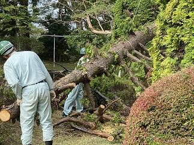
 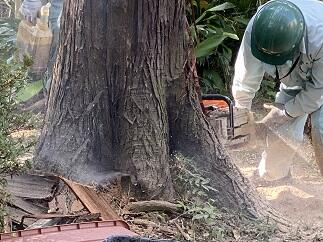
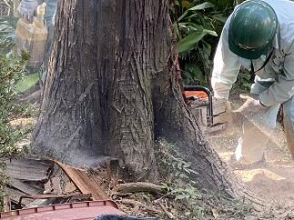


台風15号で東郷池に直接倒れた檜を含む池周辺の倒木4本を本日（10月28日）やっと、業者の方に撤去していただくことができましたのでお知らせします。（写真 上段から下段左まで撤去の様子 下段中央、右は倒木撤去後の東郷池）
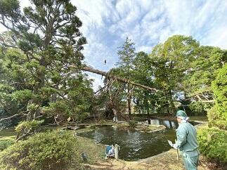
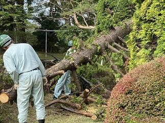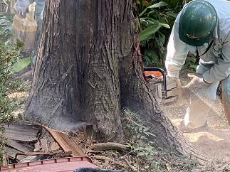 東郷池の復旧状況No.2
10月1日（火）は、3日間の秋休みの初日です。午前中は、学思館で救急救命の講習会が行われています。ブリティッシュヒルズの英語研修は2日目で、SSHの国内サイエンスツアーは今日初日です。東郷池の倒木の処理も少しづつ成果が出てきました。


東郷池の復旧状況No.1
台風15号による影響で倒木により悲惨な状況であった東郷池も古川さん、友信さん、渡辺さんのご協力で少しづつ復旧に向けて進んでいます。大きな倒木は専門業者さんにお願いしないと撤去はできませんが、少しづつでも2次被害が出ないように自分たちでできる範囲で作業を進めていて、お陰様で大分見通しが良くなってきました。
被災直後の様子は→台風15号の爪痕


被災直後の様子は→台風15号の爪痕
今日９月30日（月）は前期最後の日です。生徒は明日から３日間秋休みです。この間を利用してブリティッシュヒルズの英語研修やSSH国内サイエンスツアーなどが行われます。学校は後期の準備や台風の被害からの復旧を継続して行います。写真は今日の東郷池の復旧状況です。できることを一歩一歩着実に進めています。


 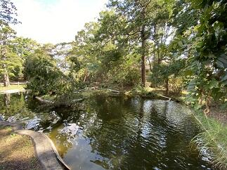
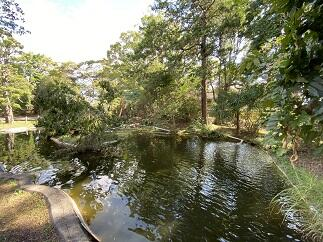
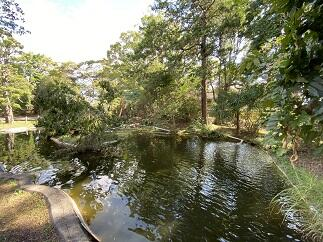 東郷池クリーン作戦


 東郷池は現在アオコが発生していてグリーンウオーター状態です。せっかく見えていた鯉の泳ぐ姿もわかりにくい状態です。そこで、少しでもアオコを除去して池の水を浄化する作戦を開始しました。対策は、水棲生物による浄化とろ過機によるアオコの除去の２方面作戦です。水棲生物の代表はヒメタニシとホテイアオイです。ヒメタニシは８月30日（金）に50匹を池に放しました。ホテイアオイは９月４日に池に入れました。手作りの池の水の循環濾過装置は濾過材を９月２日から新しくしました。結果が出てくれると良いのですが。
東郷池は現在アオコが発生していてグリーンウオーター状態です。せっかく見えていた鯉の泳ぐ姿もわかりにくい状態です。そこで、少しでもアオコを除去して池の水を浄化する作戦を開始しました。対策は、水棲生物による浄化とろ過機によるアオコの除去の２方面作戦です。水棲生物の代表はヒメタニシとホテイアオイです。ヒメタニシは８月30日（金）に50匹を池に放しました。ホテイアオイは９月４日に池に入れました。手作りの池の水の循環濾過装置は濾過材を９月２日から新しくしました。結果が出てくれると良いのですが。 復活‼美しい東郷池
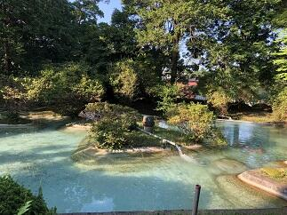


 先日お伝えした東郷池クリーンアップ作戦が功を奏して、鯉や鮒やメダカが泳ぐ姿が美しく映える東郷池が復活しました。とにかくうれしいかぎりです。まずはご覧ください。(上の写真は早朝の東郷池の風景です)
先日お伝えした東郷池クリーンアップ作戦が功を奏して、鯉や鮒やメダカが泳ぐ姿が美しく映える東郷池が復活しました。とにかくうれしいかぎりです。まずはご覧ください。(上の写真は早朝の東郷池の風景です)
先日お伝えした東郷池クリーンアップ作戦が功を奏して、鯉や鮒やメダカが泳ぐ姿が美しく映える東郷池が復活しました。とにかくうれしいかぎりです。まずはご覧ください。(上の写真は早朝の東郷池の風景です)  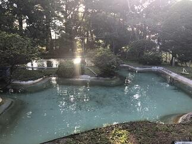
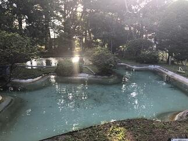


 池の中の鯉たちは新しい東郷池の環境に慣れてきたようで、ひと安心です。（夕方の東郷池の風景です）
池の中の鯉たちは新しい東郷池の環境に慣れてきたようで、ひと安心です。（夕方の東郷池の風景です） 東郷池の水全部抜く！


 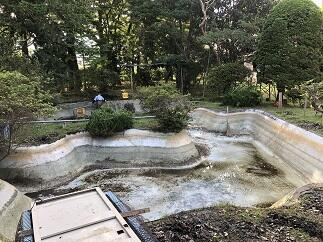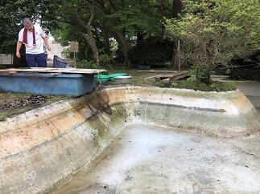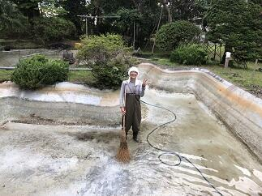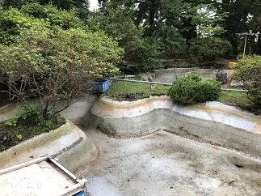
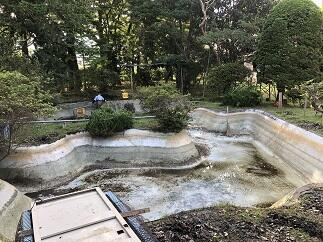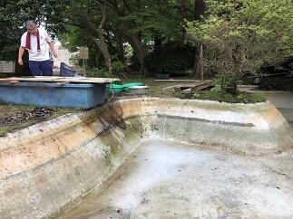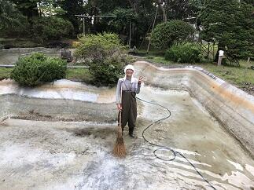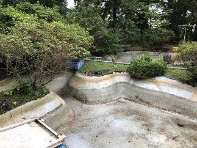
 東郷池のきれいな水の中を鯉がゆうゆうと泳ぐ姿を見たいということで、昨年からいろいろな手段を使って東郷池クリーンアップ作戦を行って参りましたが、残念ながら緑に濁った池の水を変えることができませんでした。ということで、とりあえずまず池の水を全部抜いて池を掃除して新しい水に入れ替えてみようということで今日、東郷池の水全部抜いてみました。朝6時から夕方の6時まで12時間かかりましたが掃除ができました。
東郷池のきれいな水の中を鯉がゆうゆうと泳ぐ姿を見たいということで、昨年からいろいろな手段を使って東郷池クリーンアップ作戦を行って参りましたが、残念ながら緑に濁った池の水を変えることができませんでした。ということで、とりあえずまず池の水を全部抜いて池を掃除して新しい水に入れ替えてみようということで今日、東郷池の水全部抜いてみました。朝6時から夕方の6時まで12時間かかりましたが掃除ができました。古川さん、友信さん、高木事務長さんありあがとうございました。掃除してわかったのは、思いのほか綺麗になりとってもうれしかったです。なお、池にいる鯉、鮒、メダカには池の準備ができるまで用意した水槽に移住してもらいました。
躑躅色映える
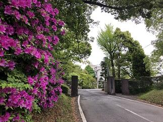 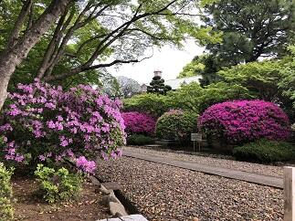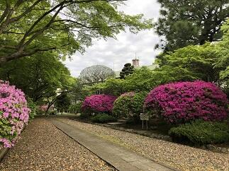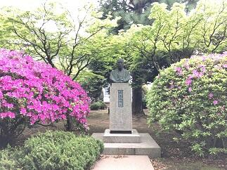
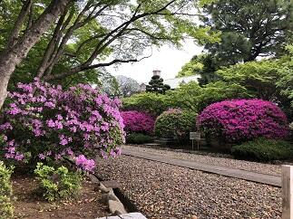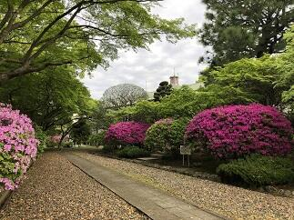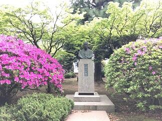 今日は、１０連休明けの令和に入って初めての登校日となりました。皆様は１０日間の連休はいかかがお過ごしだったでしょうか。学校では、連休前に記念館の周りで咲いていた真っ赤な躑躅の花が終わり、躑躅の花の色といえばこの色と思い出す方が多い鮮やかな赤紫色の大きな花とそれらに交じって薄いピンク色や真っ白な躑躅の花が咲き誇っています。
今日は、１０連休明けの令和に入って初めての登校日となりました。皆様は１０日間の連休はいかかがお過ごしだったでしょうか。学校では、連休前に記念館の周りで咲いていた真っ赤な躑躅の花が終わり、躑躅の花の色といえばこの色と思い出す方が多い鮮やかな赤紫色の大きな花とそれらに交じって薄いピンク色や真っ白な躑躅の花が咲き誇っています。
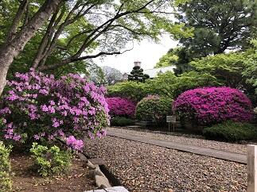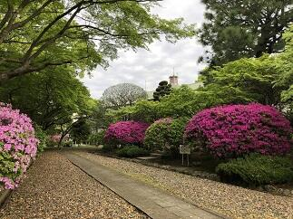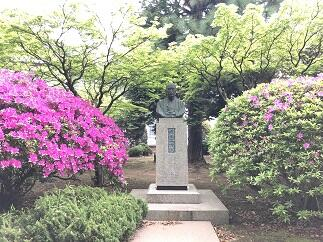今日は、１０連休明けの令和に入って初めての登校日となりました。皆様は１０日間の連休はいかかがお過ごしだったでしょうか。学校では、連休前に記念館の周りで咲いていた真っ赤な躑躅の花が終わり、躑躅の花の色といえばこの色と思い出す方が多い鮮やかな赤紫色の大きな花とそれらに交じって薄いピンク色や真っ白な躑躅の花が咲き誇っています。 新緑とツツジが美しい記念館周辺


 今週に入って、天候が不安定な日が続いています。今日も朝は雨模様ですが、記念館周辺を歩いていると新緑のなんとも言えない淡くまぶしい緑とこれからだんだんと見ごろを迎え少しづつ咲き始めたツツジの燃えるような真っ赤な花の美しさに目が奪われます。もしかしたら新緑が最も美しく見える時期なのではないかと思います。今日は、そんな記念館周辺の風景をお届けします。
今週に入って、天候が不安定な日が続いています。今日も朝は雨模様ですが、記念館周辺を歩いていると新緑のなんとも言えない淡くまぶしい緑とこれからだんだんと見ごろを迎え少しづつ咲き始めたツツジの燃えるような真っ赤な花の美しさに目が奪われます。もしかしたら新緑が最も美しく見える時期なのではないかと思います。今日は、そんな記念館周辺の風景をお届けします。 記念館登録有形文化財の登録プレートの支持台が新しくなりました
本日、記念館が登録有形文化財として登録されていることを示す文化庁からいただいた登録プレートを設置する屋根つきの支持台が完成しました。今まで支持台になっていた木材の劣化に伴い、この度、新たな支持台を技能員の古川さんと工芸の轡先生のお二人に新たなデザインで制作していただきました。本当にお二人には心より感謝いたします。制作は支柱を立てて、屋根を作り、その屋根の木材部分やプレートを設置する木材への漆ラッカーによる塗装を施し、屋根にはかつて記念館の屋根で使われていたスレートを使い、巴瓦とみね瓦は轡先生が焼き物で制作してくださいました。着手から約４か月に及ぶ期間を経てここに皆さんへこの素晴らしい作品をご紹介できることをうれしく思います。記念館にお越しの際は是非ご自分の目で確かめくださると幸いです。完成までの工程を写真でご紹介したいと思います。


桜のある風景８
新しい年度を迎え、新しく赴任された教職員の皆さんを桜も温かく出迎えてくれている本校の今日の状況をお伝えします。多くの桜が咲き誇り、その桜の花の下、鶯の声も時折聞こえるなかで、生徒は部活に励んでいます。まさに春うららですね。
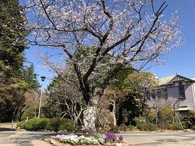 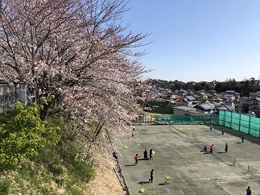
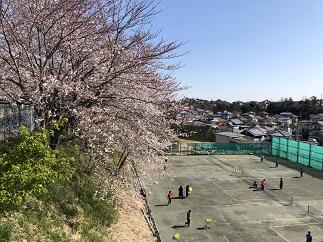
写真左は正門入って案内掲示版付近の桜、写真中央と右は軟式テニス部コート近くの東側斜面の桜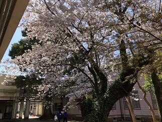

写真左、中央は中庭の桜、写真右は野球場付近の桜
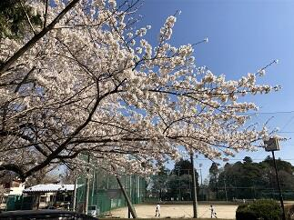

写真左は西側通用門付近の桜、写真中央は硬式テニス部コート付近の桜、写真右は西館近くの椿と桜
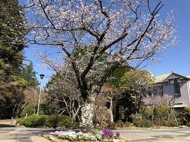
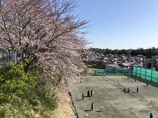写真左は正門入って案内掲示版付近の桜、写真中央と右は軟式テニス部コート近くの東側斜面の桜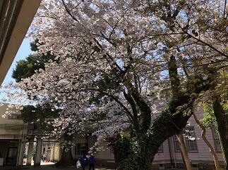
写真左、中央は中庭の桜、写真右は野球場付近の桜
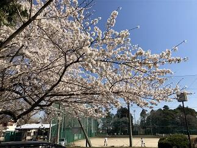
写真左は西側通用門付近の桜、写真中央は硬式テニス部コート付近の桜、写真右は西館近くの椿と桜
桜のある風景７
ここ数日の天候を表す言葉としては、「花冷え」、「花曇り」といった季語が最もあってはまっている気がします。その影響か桜の開花状況も少し緩やかになった気がしています。今日は、正門付近の状況を中心にお伝えします。正門手前（写真上段左）道路に面した木々（写真上段中央）は、まだ二分咲きといった程度。正門を入ってすぐの古木（写真上段右）は三分咲き程度です。


 周辺の状況として学思館の周りの木々（写真下段左、中央）や駐輪場周辺の木々（写真下段右）も同様の状況です。
周辺の状況として学思館の周りの木々（写真下段左、中央）や駐輪場周辺の木々（写真下段右）も同様の状況です。


周辺の状況として学思館の周りの木々（写真下段左、中央）や駐輪場周辺の木々（写真下段右）も同様の状況です。 桜のある風景６
本校の桜（ソメイヨシノ等）の今日の状況をお届けします。やはり場所により、木の状況によりかなり違いが見られます。
 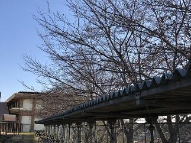
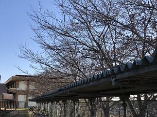 駐輪場脇の東側斜面の上にある桜は、開花したものや明日にでも開花するものが多い状況です。（写真上段左、中央）
駐輪場脇の東側斜面の上にある桜は、開花したものや明日にでも開花するものが多い状況です。（写真上段左、中央）

 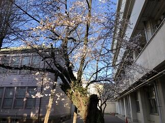道路に面した南側の木々は二分から三分咲き（写真上段右 地域交流棟脇）（写真下段左 南側テニスコート脇）,野球場脇の通用門近くの桜は五分咲き（写真下段中央）、中庭の桜の古木は二分咲き程度です。（写真下段右）
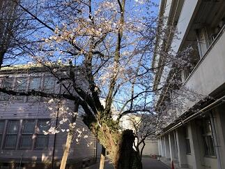道路に面した南側の木々は二分から三分咲き（写真上段右 地域交流棟脇）（写真下段左 南側テニスコート脇）,野球場脇の通用門近くの桜は五分咲き（写真下段中央）、中庭の桜の古木は二分咲き程度です。（写真下段右）
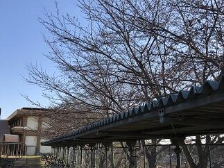駐輪場脇の東側斜面の上にある桜は、開花したものや明日にでも開花するものが多い状況です。（写真上段左、中央）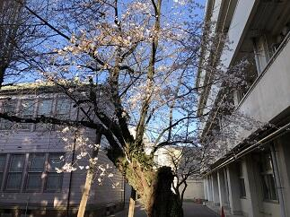道路に面した南側の木々は二分から三分咲き（写真上段右 地域交流棟脇）（写真下段左 南側テニスコート脇）,野球場脇の通用門近くの桜は五分咲き（写真下段中央）、中庭の桜の古木は二分咲き程度です。（写真下段右） 桜のある風景５
今日はこれまでにご紹介した桜の咲いている場所をお教えしましょう。

 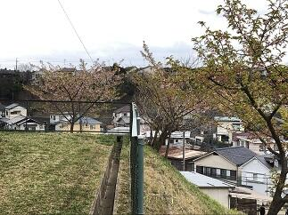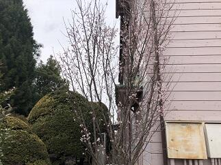１で紹介した河津桜は学思館の脇の木です。外の道路からもよく見える木です。(写真上段左)
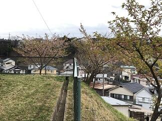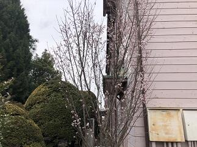１で紹介した河津桜は学思館の脇の木です。外の道路からもよく見える木です。(写真上段左)
２で紹介した寒桜はプールの奥、野球場の得点板の奥にある木です。（写真上段右）
３で紹介した河津桜は、第2体育館脇で弓道場の上の斜面の木です。（写真下段左）
４で紹介したシナミザクラは、記念館の脇にある木です。（写真下段右）
お立ち寄りの際によろしければご覧ください。
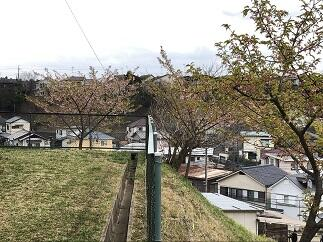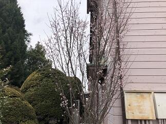１で紹介した河津桜は学思館の脇の木です。外の道路からもよく見える木です。(写真上段左)２で紹介した寒桜はプールの奥、野球場の得点板の奥にある木です。（写真上段右）
３で紹介した河津桜は、第2体育館脇で弓道場の上の斜面の木です。（写真下段左）
４で紹介したシナミザクラは、記念館の脇にある木です。（写真下段右）
お立ち寄りの際によろしければご覧ください。
桜のある風景４


 今日の桜情報は、まずは、ソメイヨシノの様子からご報告しますと、写真ではわかりずらいですが蕾（写真左）が緑色から濃いピンク色になってきました。蕾の色がうすいピンク色になるといよいよ開花です。また、別の場所にあるシナミザクラ（写真中央、右）も咲き始めました。
今日の桜情報は、まずは、ソメイヨシノの様子からご報告しますと、写真ではわかりずらいですが蕾（写真左）が緑色から濃いピンク色になってきました。蕾の色がうすいピンク色になるといよいよ開花です。また、別の場所にあるシナミザクラ（写真中央、右）も咲き始めました。 桜のある風景３
 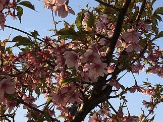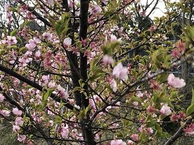校内にある多くの桜は、同じ種類でも、木が育った場所や環境で咲く時期が、かなりずれます。今日ご紹介する桜は、風景１でご紹介した河津桜よりは日当たりが、良い場所で咲いているので、葉がかなり目立っています。なお、同じ環境にある本校のソメイヨシノの蕾も膨らみ始めた状態です。このソメイヨシノの桜の開花予想については、「2月1から毎日の最高気温を足していき、合計して600度になったときに桜が開花する」と600度の法則があると言われています。であるとすると昨日までに500度前後なので、これから12から14度くらいの平均でいけば７，８日後くらいには開花するのではないかと思われます。最新の開花予想と合わせて観察していきたいと思います。
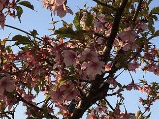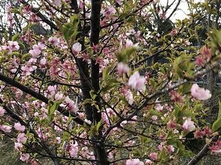校内にある多くの桜は、同じ種類でも、木が育った場所や環境で咲く時期が、かなりずれます。今日ご紹介する桜は、風景１でご紹介した河津桜よりは日当たりが、良い場所で咲いているので、葉がかなり目立っています。なお、同じ環境にある本校のソメイヨシノの蕾も膨らみ始めた状態です。このソメイヨシノの桜の開花予想については、「2月1から毎日の最高気温を足していき、合計して600度になったときに桜が開花する」と600度の法則があると言われています。であるとすると昨日までに500度前後なので、これから12から14度くらいの平均でいけば７，８日後くらいには開花するのではないかと思われます。最新の開花予想と合わせて観察していきたいと思います。 桜のある風景２
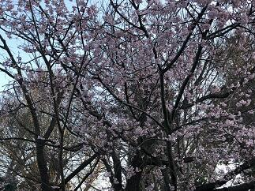
 今日は、種類が特定できませんが、たぶん寒桜かなと思われる桜をご紹介します。
今日は、種類が特定できませんが、たぶん寒桜かなと思われる桜をご紹介します。
今日は、種類が特定できませんが、たぶん寒桜かなと思われる桜をご紹介します。 桜のある風景１
 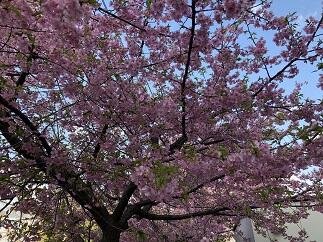
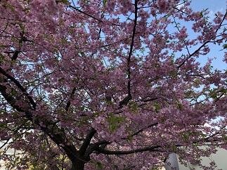 桜の開花が佐倉高校でもちらほらと見られるようになってきました。桜といってもそれぞれ咲く時期や咲く場所、色彩や咲き方がいろいろであり、それぞれに趣があります。今年は例年に比べ桜の開花が早いとのこと。これから、何回か校内の桜の様子をお届けしていきたいと思います。今回は校内の河津桜をご紹介します。
桜の開花が佐倉高校でもちらほらと見られるようになってきました。桜といってもそれぞれ咲く時期や咲く場所、色彩や咲き方がいろいろであり、それぞれに趣があります。今年は例年に比べ桜の開花が早いとのこと。これから、何回か校内の桜の様子をお届けしていきたいと思います。今回は校内の河津桜をご紹介します。 氷結
 東郷池の水を濾過するために水を循環させていますが、どうしても池の表面で流れが緩やかな部分があり、このところの寒気の強まりでせいで、池の表面の3分の１が氷結しました。(左写真)ちなみに佐倉高校周辺の早朝の気温は、マイナス３℃でした。また、このところ１７日間連続で雨が降っていないこともあり、乾燥注意報が継続して出されています。空気が乾燥すると、のどの粘膜の防御機能が低下し、インフルエンザにかかりやすくなるので手洗いや適度に水分を補給することが重要です。また、体のウイルスへの抵抗力を高めるために、十分な休養とバランスのとれた栄養摂取を日ごろから心がけましょう。あと、免疫力を高めるために腸内環境を整えることが大切です。そのためにも食べ物に気をつけるだけでなくお腹を冷やさないようにしましょう。みんなでこの冬を元気に乗り越えましょう。
東郷池の水を濾過するために水を循環させていますが、どうしても池の表面で流れが緩やかな部分があり、このところの寒気の強まりでせいで、池の表面の3分の１が氷結しました。(左写真)ちなみに佐倉高校周辺の早朝の気温は、マイナス３℃でした。また、このところ１７日間連続で雨が降っていないこともあり、乾燥注意報が継続して出されています。空気が乾燥すると、のどの粘膜の防御機能が低下し、インフルエンザにかかりやすくなるので手洗いや適度に水分を補給することが重要です。また、体のウイルスへの抵抗力を高めるために、十分な休養とバランスのとれた栄養摂取を日ごろから心がけましょう。あと、免疫力を高めるために腸内環境を整えることが大切です。そのためにも食べ物に気をつけるだけでなくお腹を冷やさないようにしましょう。みんなでこの冬を元気に乗り越えましょう。 御用始め


 今日は、佐倉は朝からとても寒くて通勤で学校に歩いている途中は目と耳が痛かったです。（凍っちゃうんじゃないかと思うほど）
今日は、佐倉は朝からとても寒くて通勤で学校に歩いている途中は目と耳が痛かったです。（凍っちゃうんじゃないかと思うほど）案の定、気温は氷点下だったようで東郷池も凍っていました。寒の入りが近いので朝晩の寒さが一段と厳しくなっているようです。特に室内と外の寒暖差が激しいので皆さんも健康に気を付けてお過ごしください。
落葉舞い散る東郷池
いよいよ、紅葉が落葉になって地面や水面を美しく彩る季節となりました。見上げていた視線を足元に落として、その美しさに感動する一方で、掃除をする大変さに思いがめぐります。自然のなかで、たとえば山のなかに生える紅葉の落葉であれば、自然の食物連鎖のサイクルに任せておけば有効に活用されるので、いちいち掃除などしません。ところが、これが庭に生える樹木からの落葉となると、庭を落葉だらけにしておく訳にもいかず毎日掃除をするわけです。しかも、この季節はいったん綺麗に掃除しても、ひと風吹けばまた元通りという恐怖の体験を何度もする時期なのです。
 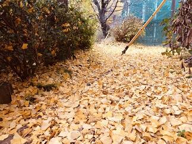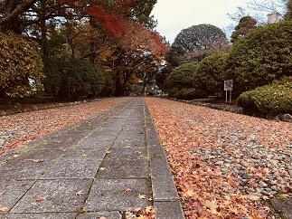
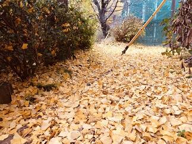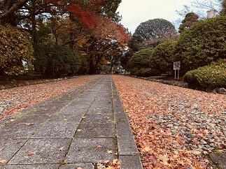
写真のとおり東郷池も同じ状況です。落葉の下を鯉が優雅に泳ぐ姿も一興かもしれませんが、これも鯉が見えればの話ですね。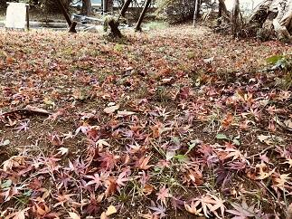 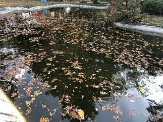
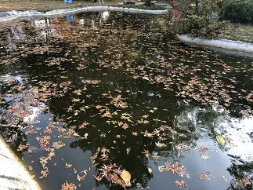
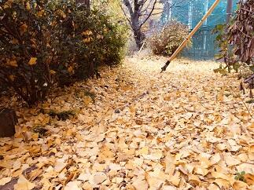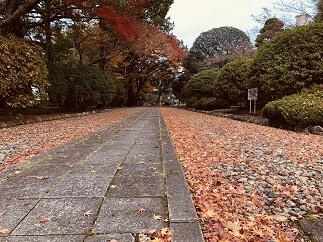写真のとおり東郷池も同じ状況です。落葉の下を鯉が優雅に泳ぐ姿も一興かもしれませんが、これも鯉が見えればの話ですね。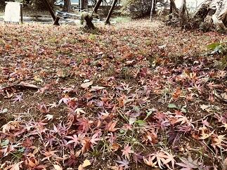
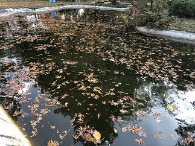 環境整備
本校の第2グランド脇の通学路（京成佐倉駅から学校までの通学路）について、通学路に掛かっていた樹木の剪定と、雨がひどいときに第2グランドの土砂が流出しないようにする対策の一環として、土嚢をフェンス下に並べるなどの作業が一段落しました。お陰様で、枝落ち防止や視界確保による通学路の安全確保等に役立つとともに地域の景観の確保にも役立っています。千葉県教育庁関係部局のご尽力に感謝申し上げます。ありがとうございました。
 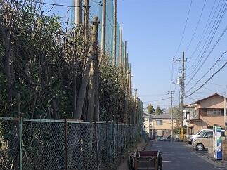
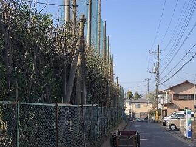
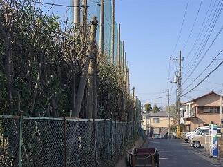 紅葉だより３
本校の校内授業研修週間に併せて、一昨日は、ＳＧＨ運営指導協議会の方々に1年生のＳＧＨの課題研究の様子を御覧いただきご指導、ご助言をいただきました。また、昨日は、初任者研修における代表者授業を初任者の先生に英語教育拠点校としての英語の授業を中学校・高校の先生方に公開しました。その後、それぞれが指導助言の先生方を中心に、他校から参加された先生方を含めて研究協議を行いました。研究協議では内容の濃い協議がなされ、多くの学びがありました。今後の更なる授業改善に向けて頑張ってまいります。参加された先生方、ご助言いただいた先生方には厚く御礼申し上げます。
英語の研究協議会では、本校の先生方の工夫された授業のなかで生徒が生き生きと頑張る姿にどの先生方も感動していらっしゃいました。先生方と生徒の明るい表情が教室内で輝いていて素敵でした。
 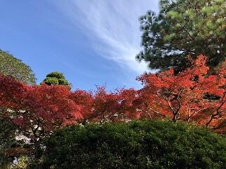
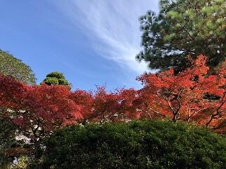 昨日は、たいへん天候にも恵まれ、紅葉自体の美しが青空により一層映えて一段と綺麗でした。
昨日は、たいへん天候にも恵まれ、紅葉自体の美しが青空により一層映えて一段と綺麗でした。
英語の研究協議会では、本校の先生方の工夫された授業のなかで生徒が生き生きと頑張る姿にどの先生方も感動していらっしゃいました。先生方と生徒の明るい表情が教室内で輝いていて素敵でした。
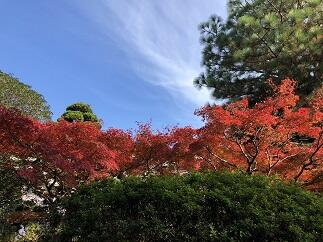昨日は、たいへん天候にも恵まれ、紅葉自体の美しが青空により一層映えて一段と綺麗でした。 紅葉だより２
 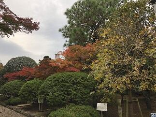
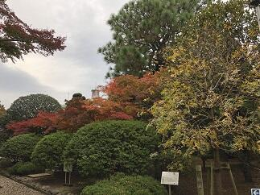 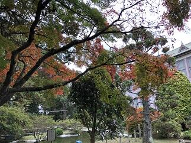
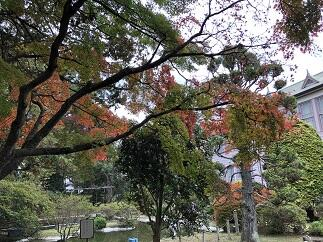
 本校の庭にある樹々も立冬の時と比べても大分色づいてまいりました。曇り空で光量が少ないため紅葉の色映えが写真ではいまいちですが、状況はお伝えできるのではないかと思います。
本校の庭にある樹々も立冬の時と比べても大分色づいてまいりました。曇り空で光量が少ないため紅葉の色映えが写真ではいまいちですが、状況はお伝えできるのではないかと思います。今週は先生方がお互いの授業を相互に参観して授業改善に役立てるための校内授業研修週間となっています。併せてSGH運営指導協議会や初任研の研究協議会、英語拠点校公開授業等が行われ多くの方が授業を参観にいらっしゃいます。
立冬（紅葉だより１）


 今日は、二十四節気の立冬です。暦の上では、季節は冬に入りました。学校の庭の木々も朝晩の冷え込みで、だいぶ色づいてまいりました。朝晩の冷え込みで体調をくずしたり、空気の乾燥など風邪のウイルスなどが活発に活動しやすい時期です。来週には修学旅行もあり、今学校では、そろそろ流行りだしそうなインフルエンザなどへの対応で手洗いの励行や手のアルコール消毒などの対策を行っています。
今日は、二十四節気の立冬です。暦の上では、季節は冬に入りました。学校の庭の木々も朝晩の冷え込みで、だいぶ色づいてまいりました。朝晩の冷え込みで体調をくずしたり、空気の乾燥など風邪のウイルスなどが活発に活動しやすい時期です。来週には修学旅行もあり、今学校では、そろそろ流行りだしそうなインフルエンザなどへの対応で手洗いの励行や手のアルコール消毒などの対策を行っています。 紅葉情報N0.1
 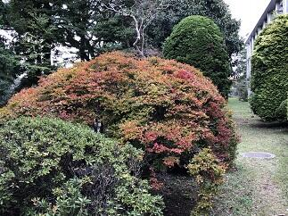
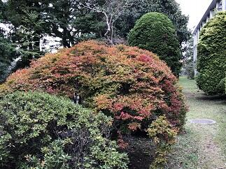 このところ急に寒さが増してきて、特に朝夕の寒さは,なかなか、厳しいものがあります。
このところ急に寒さが増してきて、特に朝夕の寒さは,なかなか、厳しいものがあります。現在、日の出が５時55分、日の入りが16時51分となっていて、昼間の時間は、およそ11時間と短くなってきてますので、日差しをありがたく感じる今日この頃です。寒暖差が激しいほど紅葉が美しくなるそうですが今年はどうでしょうか。本校の庭の木々もほんとに一部ですが、色づいてきています。あまり寒いのは困りますが、一方で、すばらしい紅葉が見られたらと期待しているところです。学校にお立ち寄りの際は是非木々の様子も気に留めて見てただけるとありがたいです。（写真は10月26日現在）
台風24号の爪痕


 台風24号が、日本列島を縦断しその脅威を全国の至る所にふるっていきました。本校の朝の状況をお伝えします。本校は古木が多く今回のような暴風が来ると多くの樹木が枝を折られてしまいます。今回は、枝だけでなく技能員さん作業場そばの楓が一本根元から折れてしまいました。(写真上段 左と中)今までも生徒や先生方を見守ってくれて、これから秋に向かって綺麗な紅葉を見せてくれたはずなのにと、とても残念で心が痛みます。中庭の本校舎側にあるベンチが風で記念館側に飛んでいたり、東郷池の水面は折れた枝や落ち葉でいっぱいだったり、学思館前の舗道も記念館前の庭園も大きな枝がそこかしこに落ちているなどこれ以上は散らからないといった状態でした。台風25号が今回に近いコースをたどりそうだということですので、これ以上被害がひろがらないことを祈ります。
台風24号が、日本列島を縦断しその脅威を全国の至る所にふるっていきました。本校の朝の状況をお伝えします。本校は古木が多く今回のような暴風が来ると多くの樹木が枝を折られてしまいます。今回は、枝だけでなく技能員さん作業場そばの楓が一本根元から折れてしまいました。(写真上段 左と中)今までも生徒や先生方を見守ってくれて、これから秋に向かって綺麗な紅葉を見せてくれたはずなのにと、とても残念で心が痛みます。中庭の本校舎側にあるベンチが風で記念館側に飛んでいたり、東郷池の水面は折れた枝や落ち葉でいっぱいだったり、学思館前の舗道も記念館前の庭園も大きな枝がそこかしこに落ちているなどこれ以上は散らからないといった状態でした。台風25号が今回に近いコースをたどりそうだということですので、これ以上被害がひろがらないことを祈ります。 短時間豪雨

 昨日7月9日の14:30からSSHの運営指導委員会が地域交流施設において行われました。その会議が終わるころから雨が降り出し、30分間くらいでしたが雷とともにものすごい雨が降りました。マレーシア、タイ、シンガポールなど東南アジアの国々のスコールのように、道路だったところが、あっという間に川に代わるような、まさにバケツで撒いたような強さと量の雨でした。
昨日7月9日の14:30からSSHの運営指導委員会が地域交流施設において行われました。その会議が終わるころから雨が降り出し、30分間くらいでしたが雷とともにものすごい雨が降りました。マレーシア、タイ、シンガポールなど東南アジアの国々のスコールのように、道路だったところが、あっという間に川に代わるような、まさにバケツで撒いたような強さと量の雨でした。この雨で恩恵を受けたとすれば東郷池の水が増えていつになく水がきれいになったことです。普段は泳いでいる姿をはっきり・くっきりとみることができない東郷池の鯉や鮒たちの姿を今日はしっかりととらえることができました。
芒種
今日は、太陽の黄経が75°にあたる二十四節気でいうところの芒種（ぼうしゅ）です。イネやムギなどの芒(のぎ)のある作物の種を播(ま)く時節というところから由来しているそうです。今は田植の時期はかなり早まっていますが、昔の田植の時期はこのころでした。ちょうど梅雨に入る時期でもあり、少し蒸し暑くじめじめする季節のはじまりです。梅雨は、池の魚などの水中動物や草花や樹木などの植物は言うに及ばす、生物に雨の恵みをもたらす大切な時期です。東郷池の鯉や鮒たちも池の水面をたたく雨のリズムや日光の微妙な光加減に、梅雨入りを感じてか、なんとなく元気そうでした。
墨流し
 このところの暑さや東郷池のエアレーションの不足なのか、原因ははっきりとわかりませんが、池のバクテリアの環境が悪化しているようで、池の水面に油膜の模様ができています（写真）。ここでは、池の水の環境悪化とは別の視点で、この模様自体に視点を当ててみると、この油膜の模様ですが、「墨流し」と呼ばれる水面に落とした墨汁や顔料を吹き散らすとできる模様と原理は同じで、染物では「墨流し染め」の技法が日本では古くから使われています。数学では「アトラクター attractor」と呼ばれている分野で、ある力学系がそこに向かって時間発展をする集合を言います。水質問題とみるか芸術の対象として見るか数学の対象と見るか、同じ物を見ても物の見方は多種多様ですね。
このところの暑さや東郷池のエアレーションの不足なのか、原因ははっきりとわかりませんが、池のバクテリアの環境が悪化しているようで、池の水面に油膜の模様ができています（写真）。ここでは、池の水の環境悪化とは別の視点で、この模様自体に視点を当ててみると、この油膜の模様ですが、「墨流し」と呼ばれる水面に落とした墨汁や顔料を吹き散らすとできる模様と原理は同じで、染物では「墨流し染め」の技法が日本では古くから使われています。数学では「アトラクター attractor」と呼ばれている分野で、ある力学系がそこに向かって時間発展をする集合を言います。水質問題とみるか芸術の対象として見るか数学の対象と見るか、同じ物を見ても物の見方は多種多様ですね。 日々是感謝
 保護者の皆さま、５月１２日の授業参観、PTA総会、進路講演会にご参加いただきありがとうございました。特に、この総会までで、任期を終えられた松田PTA前会長をはじめとする前PTA役員の皆さま、本当に今までありがとうございました。これからも、ご支援ご協力のほど、よろしくお願いいたします。今回もそうですが、この１か月余り、本校が多くの方々に愛され支えられているんだなぁと心から感じられる機会をたくさんいただいています。今日も、早朝から剣道部の生徒さんたちが通路を箒で掃除してくれていました。そのおかげで、きれいになっている通路を多くの生徒が通学できる訳です。もし、普段見慣れている場所が、いつもきれいになっているとしたら、そこには誰かの手が入っているのかもしれません。当たり前にきれいな状態を保つには、普段から汚さないようにすることと、汚れに気がついたらきれいにすることの両方が大切なんでしょう。そのためには、まずはきれいになっていることに気がついて感謝できる心を持てるといいですね。
保護者の皆さま、５月１２日の授業参観、PTA総会、進路講演会にご参加いただきありがとうございました。特に、この総会までで、任期を終えられた松田PTA前会長をはじめとする前PTA役員の皆さま、本当に今までありがとうございました。これからも、ご支援ご協力のほど、よろしくお願いいたします。今回もそうですが、この１か月余り、本校が多くの方々に愛され支えられているんだなぁと心から感じられる機会をたくさんいただいています。今日も、早朝から剣道部の生徒さんたちが通路を箒で掃除してくれていました。そのおかげで、きれいになっている通路を多くの生徒が通学できる訳です。もし、普段見慣れている場所が、いつもきれいになっているとしたら、そこには誰かの手が入っているのかもしれません。当たり前にきれいな状態を保つには、普段から汚さないようにすることと、汚れに気がついたらきれいにすることの両方が大切なんでしょう。そのためには、まずはきれいになっていることに気がついて感謝できる心を持てるといいですね。 柳緑花紅
今日は絵に描いたような五月晴れに恵まれ、公開授業、PTA総会、進路講演会と重要な行事が無事開催できそうです。また、ソフトテニス、囲碁、将棋、柔道、バスケットボール、卓球、剣道、バレーボールのそれぞれの部活動は、関東大会等の県予選で試合に臨んでいます。日ごろから鍛えた力を存分に発揮して目指す目標を達成できることを期待します。話は変わりますが、普段の土曜日の朝は、東郷池の鯉たちは朝御飯は無しですが、今日はしっかりと食べることができて幸せそうでした。（写真左）昨日も学校の敷地内にある草花について話をさせていただきましたが、そこにあるのが当たり前のような感覚になっていると、特に身近にあるものに対して、美しさやありがたみに気付くのが難しいものです。ありふれたものに秘められたかけがえのなさに気付くことができれば毎日の生活は今以上に心豊かに穏やかに過ごせるのではないでしょうか。さて、昨日に引き続きお花が咲いている場所を見つけていただきたく写真を載せました。これは昨日の草花よりは難易度が高くなると思いますが、頑張って見つけてみてください。


百花為誰開

 このところ急に３月の寒さに戻ったり、一日のなかでも気温の変化が激しい日が続いていますが、校内を見て歩くと「躑躅」のような大きな花はありませんが、野の草たちも含め多くの草花が小さな花を咲かせています。校内で、結構目立つのはブタナ（一見とっても成長の良いタンポポに見える）が長い茎の先に黄色の花を咲かせています。花は、誰のためでもなく、ただ無心に咲いています。そこにはいのちの静かな輝きが見てとれます。その様子は、とても尊く清らかで見る人の心を打ちます。
このところ急に３月の寒さに戻ったり、一日のなかでも気温の変化が激しい日が続いていますが、校内を見て歩くと「躑躅」のような大きな花はありませんが、野の草たちも含め多くの草花が小さな花を咲かせています。校内で、結構目立つのはブタナ（一見とっても成長の良いタンポポに見える）が長い茎の先に黄色の花を咲かせています。花は、誰のためでもなく、ただ無心に咲いています。そこにはいのちの静かな輝きが見てとれます。その様子は、とても尊く清らかで見る人の心を打ちます。明日は、公開授業の日ですが、学校にお越しの際は、学校内を散策していただき、花々もぜひご覧ください。なお、今日掲載した花々は、学校で植えたものですが、学校のどこで咲いているか探してみてください。